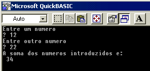
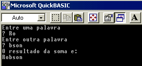

Estudando o Qbasic
Aula 3
Na aula anterior aprendemos a atribuir dados digitados pelo usuário a uma variável, agora veremos como atribuir dados a uma variável dentro do próprio programa, para isto utilizamos o comando LET, cuja tradução é "deixar".
Aproveitemos o exemplo da lição, onde o usuária introduzia dois valores e esses valores em seguida eram exibidos no vídeo. Agora o usuário irá introduzir os dois valores, porém a soma dos dois será exibida no vídeo e além disto essa soma ficará armazenada na memória.
As linha modificados aparecem em vermelho.
Cls Print "Entre um numero " Input num1 Print "Entre outro numero" Input num2 Let soma = num1 + num2 Print "A soma dos numeros introduzidos é:" Print soma End
Executando o programa teremos:

Explicação:
Sintaxe do Comando LET:
LET variável = conteúdo
Observe que o conteúdo a ser atribuído à variável deve aparecer sempre do lado direito da igualdade.
"conteúdo" pode ser expresso por um valor constante(Por exemplo 2, 4, etc), ou uma expressão(como no exemplo acima).
Durante nosso curso veremos vários exemplos.
Observações:
No nosso exemplo poderemos trocar a linha:
Let soma = num1 + num2
Por
soma = num1 + num2
Quando tentamos somar duas variáveis do tipo alfanumérico(string) não teremos a soma aritmética(isto é óbvio pois não estamos lidando com números), mas teremos uma concatenação(junção) dos dados.
Usemos uma adaptação do programa anterior para entendermos bem:
Cls Print "Entre uma palavra" Input num1$ Print "Entre outra palavra" Input num2$ Soma$ = num1$ + num2$ Print "O resultado da soma é:" Print soma$ end
Tecle Shift + F5 para executar o programa, o resultado será:

Observe as seguintes modificações no código anterior:
Como experiência final, execute o programa acima e entre dois número. Observe o resultado.
Os sinais utilizados em operações aritméticas são:
|
+ |
Soma |
|
- |
Subtração |
|
* |
Multiplicação |
|
/ |
Divisão |
|
\ |
Divisão inteira |
|
^ |
potenciação |
O operador "\" retornará o quociente de uma divisão no universo dos inteiros, por exemplo, 3\2 retornará 1.
Experimente trocar o sinal de somar pelos operadores acima no primeiro programa desta aula, e observe o funcionamento de cada um deles.
Observação:
O conteúdo a ser atribuído a uma variável alfanumérica deve ser colocado entre aspas.
Exemplo:
A$="Mar Grande" --> A$ conterá: Mar Grande